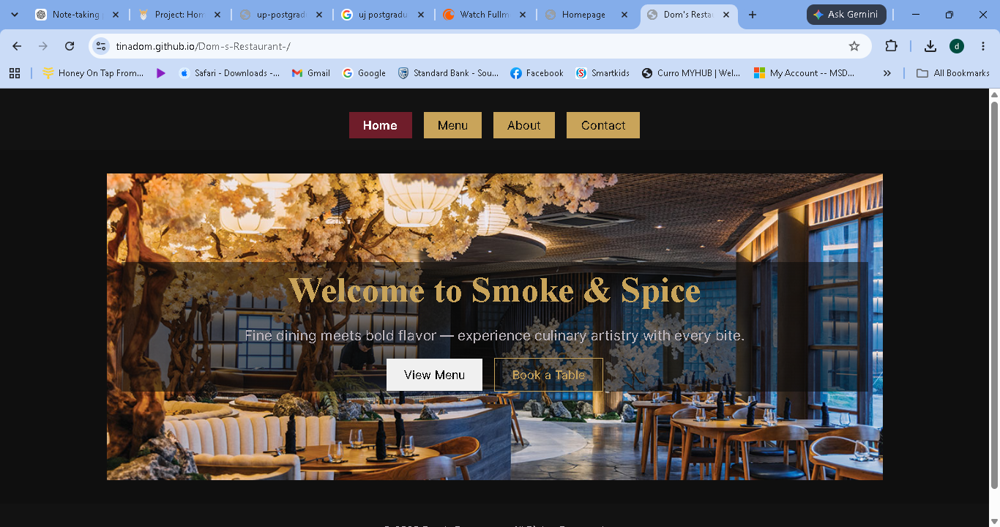
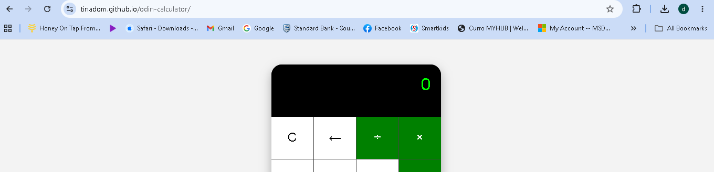
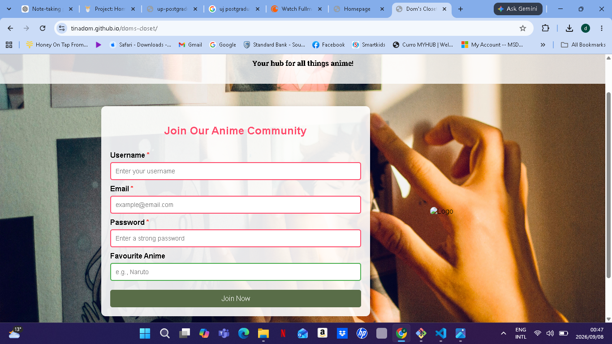
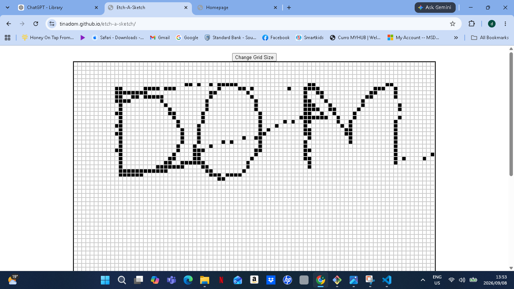
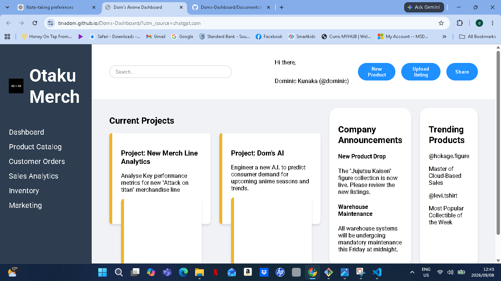
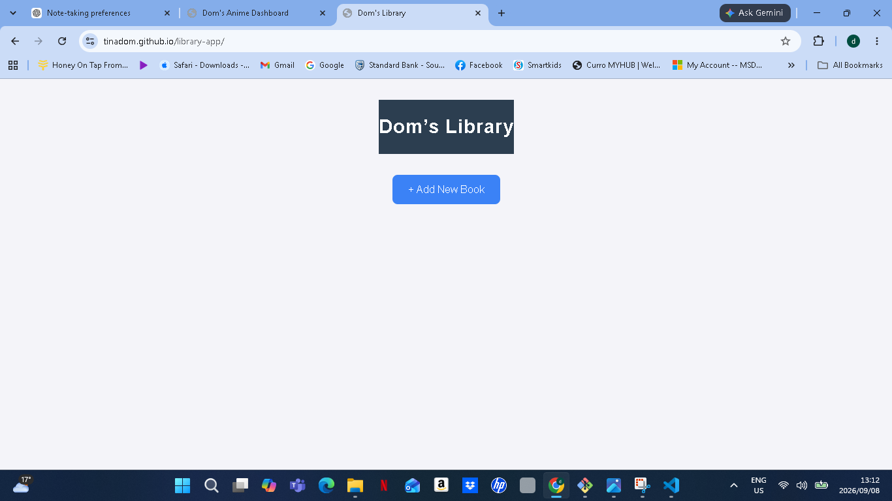

My Work





Contact
Intro text
Address: 1228 Prospect Street
Email: kunakadominic@gmail.com
Phone: 0753347594
I am a developer passionate about building clean, functional, and user-friendly web applications.






Intro text
Address: 1228 Prospect Street
Email: kunakadominic@gmail.com
Phone: 0753347594